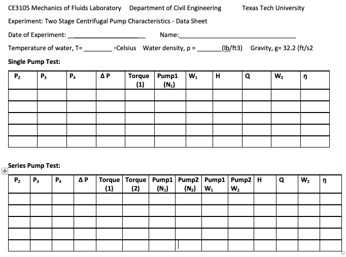
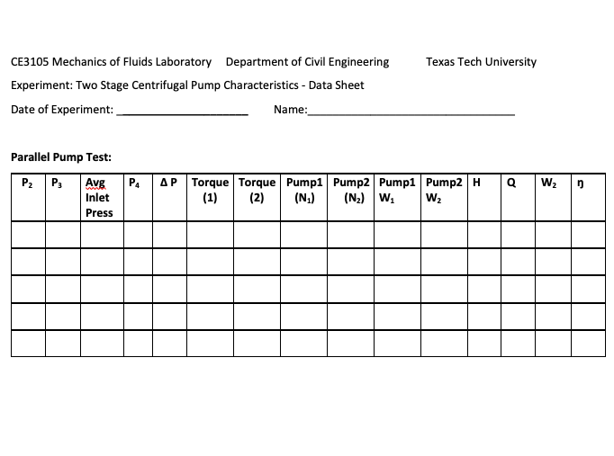

Laboratory 6 Sample Report#
Two-Stage Centrifugal Pump Characteristics
Objectives#
Observe the performance of single, parallel and series connected pumps
Collect data using a computerized data acquisition system (Versatile Data Acquisition System or VDAS)
Safety Considerations#
These are prompts only, you need to supply details.
clothing
alertness
food and drink
personal protective equipment
240-V 3-Phase AC Electricity Supply and Water
Data Acquisition#
Procedure (Single Pump using Pump 1)#
Switch off both Motor Drive Isolators
Fully open Pump 1 inlet (suction) and delivery valves. Make sure the Pump 2 inlet valve is CLOSED and the two-way valve is set to the direct flow straight to the delivery pipe
Start Pump 1 and run it to a maximum speed
Bleed all pressure gauges using the bleed line
Set the motor speed to 3000 rev./min and make sure the delivery valve is fully open
Use the delivery valve to change outlet pressure, adjust the motor speed back to its initial setting and take pressure readings
Repeat step 6 to take 5 readings (manual readings from the digital readouts)
Turn on VDAS and laptop computer, someone in your group should log on to the laptop using their TTU credentials, does not matter whom. Once running attempt to establish communications with the VDAS computer (the TA or instructor will show you how). Upon sucessful connection the computer will be reporting data as the apparatus is running. Use the data tab to record data by pressing F3 (again the TA will show you how) - repeat the 5 readings above (as best you can to match pump speeds), then collect 10 additional readings over a large range of pump speeds. Save the data file and email it to yourself for the group to use.
Procedure (Parallel Pumps)#
Switch off both Motor Drive Isolators
Open both Pump 1 and 2 inlet (suction) valves. Make sure the two-way valve is set to the direct flow straight to the delivery pipe (same as above). Fully open the delivery valve
Start both Pump 1 and 2, and run them to a maximum speed
Bleed all pressure gauges using the bleed line
Set the motor speed to 3000 rev./min and make sure the delivery valve is fully open
Use the delivery valve to change outlet pressure, adjust the motor speed back to its initial setting and take pressure readings
Repeat step 6 to take 5 readings (manual readings from the digital readouts)
Turn on VDAS and laptop computer, someone in your group should log on to the laptop using their TTU credentials, does not matter whom. Once running attempt to establish communications with the VDAS computer (the TA or instructor will show you how). Upon sucessful connection the computer will be reporting data as the apparatus is running. Use the data tab to record data by pressing F3 (again the TA will show you how) - repeat the 5 readings above (as best you can to match pump speeds), then collect 10 additional readings over a large range of pump speeds. Save the data file and email it to yourself for the group to use.
Procedure (Series Pumps: Pump 1 into Pump 2)#
Switch off both Motor Drive Isolators
Open Pump 1 inlet (suction) valve. Make sure the Pump 2 inlet valve is CLOSED. Make sure the two-way valve is set to the direct flow to the inlet of Pump 2 (opposite of settings above procedures. Fully open the delivery valve
Start both Pump 1 and 2, and run them to a maximum speed
Bleed all pressure gauges using the bleed line
Set the motor speed to 3000 rev./min and make sure the delivery valve is fully open
Use the delivery valve to change outlet pressure, adjust the motor speed back to its initial setting and take pressure readings
Repeat the steps 6 to take 5 readings
Turn on VDAS and laptop computer, someone in your group should log on to the laptop using their TTU credentials, does not matter whom. Once running attempt to establish communications with the VDAS computer (the TA or instructor will show you how). Upon sucessful connection the computer will be reporting data as the apparatus is running. Use the data tab to record data by pressing F3 (again the TA will show you how) - repeat the 5 readings above (as best you can to match pump speeds), then collect 10 additional readings over a large range of pump speeds. Save the data file and email it to yourself for the group to use.
Data Analysis#
Plot graphs of efficiency, power input and Net Pressure against flow rate for the single, parallel and series pump settings. Indicate on your plots the data that were manually collected in contrast to those from the VDAS
For single pump test, plot the dimensionless characteristics of head coefficient and power coefficient against flow coefficient. Calculate and compare the Reynolds Numbers
Tabulate all results.
Discussion/Interpretation#
For the Single Pump Test, explain the performance (relation between efficiency, head and flowrate). What is the best efficiency you think possible?
Compare the performance of series and parallel pump tests against the single pump test.
How does the total head curve change by parallel and series connections?
How does the efficiency change by parallel and series connections?
Do the efficiencies of this experiment match with the typical large industrial pump efficiency (which is normally about 75%)? Why or why not?
Data Records#

